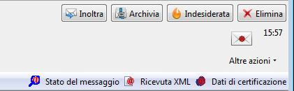
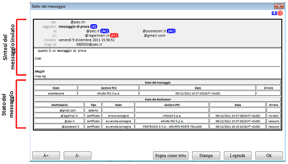
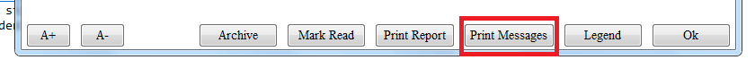
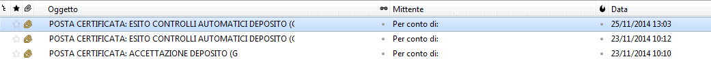
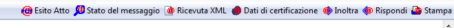
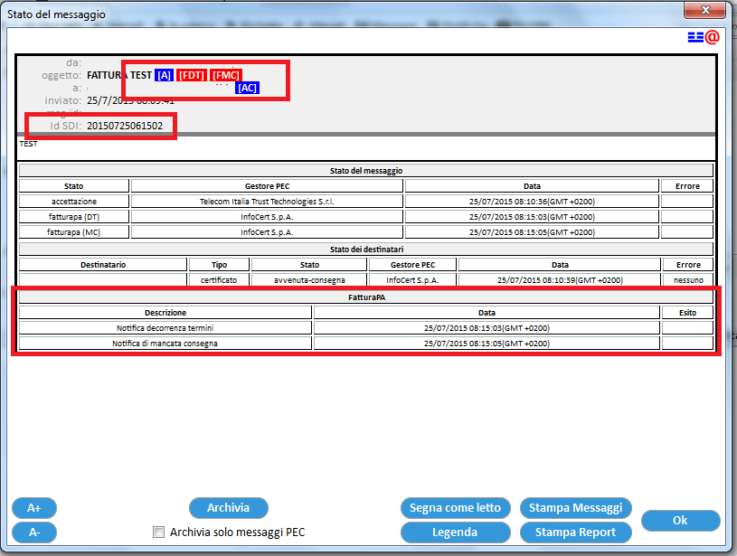

Stato del messaggio

Selezionando un messaggio di notifica, è possibile accedere
alla funzionalità Stato
del messaggio, disponibile attraverso la toolbar
personalizzata.
ThunderPEC genera una finestra riepilogativa divisa in due
sezioni:

- Sintesi
del messaggio inviato: contenente i dati principali del
messaggio inviato:
- Intestazione con i campi mittente, destinatari, oggetto e
data
- Estratto del corpo del messaggio
- Eventuale lista degli allegati al messaggio
- Stato
del messaggio che sintetizza le informazioni ricevuta
attraverso i messaggi di notifica (ad esempio: ACCETTAZIONE, CONSEGNA)
- Stato del messaggio con indicazioni relative al messaggio
generate dal proprio gestore PEC all'invio del messaggio
- Stato dei destinatari con indicazione relative ad ogni
singolo destinatario del messaggio
L'intestazione
del messaggio riporta in formato breve le informazioni relative sia al
messaggio che ai destinatari, utilizzando lo sfondo blu per indicare
una notifica positiva ed uno rosso per evidenziare eventuali problemi.
Per accedere alla legenda relativa alle informazioni sintetiche,
utilizzare il tasto Legenda
posto all'interno della finestra (per nascondere la legenda
è
sufficiente ripremere il pulsante). Le informazioni sintetiche relative
ai destinatari sono disponibile se il destinatario è di tipo
PEC (certificato).
Oltre alle intestazioni tipiche, la finestra visualizza il campo MsgID,
che rappresenta l'identificativo del messaggio inviato e che
può essere
utile nel caso si inoltri richiesta di copia dei messaggi/notifiche al
proprio gestore PEC. Secondo la normativa, se il mittente smarrisce la
ricevuta di ritorno, può richiedere una copia delle
operazioni svolte
al proprio gestore PEC che è tenuto alla conservazione per
30 mesi.
Il corpo del messaggio originale è inserito nella finestra
se ThunderPEC
riesce ad individuare il messaggio inviato (quando, ad esempio, si
trova ancora della cartella della posta inviata relativa al account
PEC). Nel caso in cui, il messaggio inviato non fosse presente (ad
esempio, perché archiviato o inviato con altro programma),
la finestra Stato del
messaggio conterrà le sole intestazioni.
Attraverso i pulsanti A+
ed A-
è possibile variare la dimensione del carattere mentre,
attraverso il pulsante Stampa,
si procede alla stampa del contenuto della finestra.
Il pulsante Segna come
letto permette di marcare come già letti tutti
i messaggi di notifica relativi al messaggio inviato

Il pulsante Stampa
messaggi da la possibilità di stampare con un
solo click il messaggio e le relative notifiche
In caso di messaggio di notifica PCT, contenente l'esito di un
deposito, la toolbar di ThunderPEC mostrerà il pulsante Stato del Messaggio


La
finestra Stato del Messaggio mostrerà. non solo i messaggi
di
notifica PEC ma anche l'esito del deposito PCT (in rosso nella figura
seguente)
Se si sta visualizzando un messaggio di POSTA CERTIFICATA,
contenente una comunicazione FatturaPA, la toolbar di ThunderPEC
mpstrerà il punlsante Stato del messaggio
La
finestra Stato del Messaggio mostrerà. non solo i messaggi
di
notifica PEC ma anche i messaggi relativi alla comunicazione FatturaPA (in rosso nella figura
seguente)
